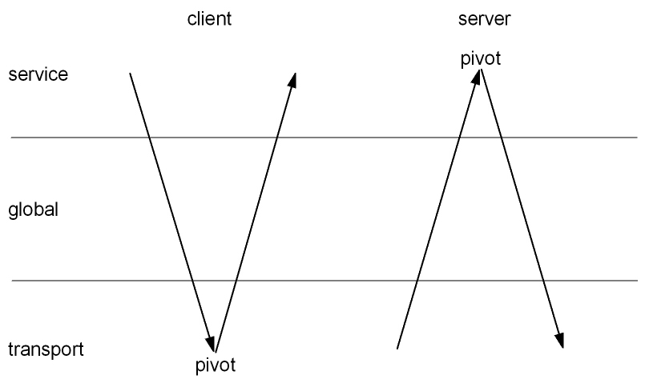
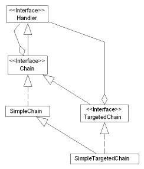
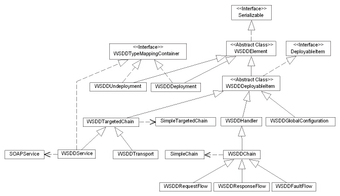
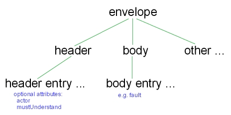
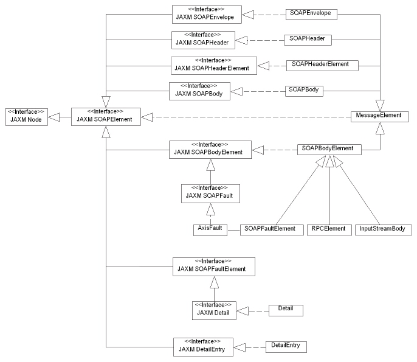
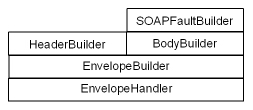
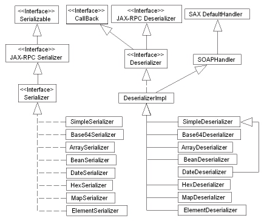

|
|

|
|
|
|
| Apache | WS |
WebServices - AxisAxis アーキテクチャガイド
バージョン 1.2
目次
はじめにこのガイドでは Axis のアーキテクチャの原理とデザインを扱っています。 アーキテクチャ概要後ほど見ていきますが、Axis は協調動作する複数のサブシステムから構成されています。この節では Axis の中核がどのように機能しているのかについての概要を見ていきます。 Axis の Handler と Message Path簡単に言うと、Axis は Message を処理するだけのものです。中心部の Axis 処理ロジックが実行されると、一連の Handlers が順番に呼び出されます。この順番は2つの要因で決まります。デプロイ設定と、エンジンがクライアントとサーバのどちらであるか、です。それぞれの Handler 呼び出しに渡されるオブジェクトは MessageContext です。MessageContext は複数の重要な部分、1) "リクエスト"メッセージ、2) "レスポンス"メッセージ、3) 様々なプロパティ、を含んでいる機構です。これについて少しだけ見ていきましょう。 Axis が呼び出される基本的な方法は2通りあります。
どちらの場合でも、Axis フレームワークの仕事は単に生成された MessageContext を、設定された Handler の集合に渡すだけです。それぞれの Handler は MessageContext に対して行うように設定された処理を行います。 サーバ上の Message Pathサーバ側のメッセージパスを以下の図に示します。小さな円柱は Handler を表し、複数の円柱を含んでいる大きい円柱は Chain (簡単に説明すると、順序付けられた Handler の集合です) を表しています。
メッセージはトランスポートリスナに (あるプロトコル特有の方法で) 到着します。この場合、トランスポートリスナを HTTP サーブレットと仮定します。トランスポートリスナの仕事は、プロトコル特有のデータを Message オブジェクト (org.apache.axis.Message) にパッケージングし、その Message を MessageContext に入れることです。また、MessageContext にはトランスポートリスナによって様々なプロパティが取り込まれます。この例では、プロパティ "http.SOAPAction" に SOAPAction HTTP ヘッダの値が設定されます。トランスポートリスナはさらに、MessageContext に transportName String を設定します。この場合、"http" を設定します。MesageContext の準備が整えば、トランスポートリスナはそれを Axis エンジンに渡します。 Axis エンジンの最初の仕事は、名前でトランスポートを検索することです。トランスポートは、リクエスト Chain、レスポンス Chain、あるいは両方を含むオブジェクトです。Chain は順番に呼び出される一連の Handler から構成される Handler です。Chain については後ほどより詳しく見ていきます。もしトランスポートリクエスト Chain があれば、invoke() メソッドに MessageContext が渡されて呼び出されます。これによりリクエスト Chain 設定で指定された全ての Handler を呼び出すことになります。 トランスポートリクエスト Handler の後、Axis エンジンは、もし設定されていればグローバルリクエスト Chain に流し、そこで指定されている全ての Handler を呼び出します。 これまでの処理の中のある時点で、うまくいけばある Handler が MessageContext の serviceHandler フィールドを設定します (一般的にこれは、"http://localhost/axis/services/AdminService" のような URL を "AdminService" サービスにマッピングする "URLMapper" Handler によって HTTP トランスポートの中で行われます)。このフィールドは、バックエンドオブジェクトに対して RPC 呼び出しを行うなどといった、サービス特有の機能を実行するために呼び出す Handler を決めます。Axis におけるサービスは一般的には "SOAPService" クラス (org.apache.axis.handlers.soap.SOAPService) のインスタンスで、このクラスはリクエストとレスポンス Chain を持ち (トランスポートレベルとグローバルレベルで見てきたのと似ています)、サービスの実際のバックエンドロジックを実行する責任を持つ単なる Handler であるプロバイダを必ず持ちます。 RPC スタイルのリクエストではプロバイダは org.apache.axis.providers.java.RPCProvider クラスです。これも単にもう一つの Handler で、呼び出されると、デプロイ時に指定された "className" パラメータで決められたクラスのオブジェクトである、バックエンド Java オブジェクトを呼びます。このプロバイダは SOAP RPC 規約を利用して呼び出すメソッドを決め 、入力の XML エンコードされた引数の型が、呼び出すメソッドが要求するパラメータの型と一致するか確かめます。 クライアント上の Message Pathクライアント側の Message Path はサーバ側の Message Path と似ていますが、下に示した通りスコープの順序が逆になっている点が異なります。
もし サービス Handler が存在すれば、それが最初に呼ばれます。クライアント側では、サービスがリモートノードで提供されているので "プロバイダ" はありませんが、リクエストとレスポンス Chain はある可能性があります。サービスのリクエストとレスポンス Chain は、システムの外に出て行くリクエストメッセージと、呼び出し元に戻ってくるレスポンスメッセージに対して、サービス特有の処理を行います。 サービスリクエスト Chain の後、グローバルリクエスト Chain があればそれが呼ばれ、その次にトランスポートが来ます。ターゲットの SOAP サーバとのメッセージの送受信に必要なプロトコル特有の操作を実際に実行する特別な Handler である Transport Sender は、メッセージを送信するために呼び出されます。(もしあれば) レスポンスは MessageContext の responseMessage フィールドに設定され、そして MessageContext はレスポンス Chain の、最初はトランスポート、次にグローバル、そして最後にサービスへと伝わっていきます。 サブシステムAxis は、責任をきれいに分離し、Axis のモジュール性を高めることを目的として協調動作するいくつかのサブシステムから構成されます。適切に階層分けされたサブシステムは、システムの全てを使用しなくても (あるいはコードをハッキングしなくても) その一部だけを利用することができます。 以下の図はサブシステムの階層を示しています。下の階層は上の階層から独立しています。'束になった'箱は相互に独立していることを表していますが、相互排他的、二者択一である必要はありません。例えば、HTTP、SMTP、JMS トランスポートはお互い独立していますが、一緒に利用することもできます。
実際には、Axis のソースコードは上記の図が意味しているほどの、サブシステムにきれいに分離されてはいません。いくつかのサブシステムはいくつものパッケージにまたがっていて、いくつかのパッケージは2つ以上のサブシステムを重ね合わせています。コード構造を改良するための、また、概念的な Axis サブシステムにより正確に従うようにするための提案は、機会があれば考えます。 メッセージフローサブシステムハンドラとチェインハンドラはメッセージを処理するためにシーケンスに沿って呼ばれます。シーケンスのある時点でハンドラはリクエストを送信してレスポンスを受信する、あるいはリクエストを処理してレスポンスを生成します。そのようなハンドラはシーケンスのピボットポイントとして知られています。上記で述べたように、ハンドラはトランスポート特有、サービス特有、グローバルのいずれかです。これらの異なる3種類のそれぞれのハンドラは組み合わさってチェインとなります。ですからシーケンス全体は3つのチェイン、トランスポート、グローバル、サービスから構成されます。以下の図にハンドラの2つのシーケンスを示します。左側はクライアント側のシーケンス、右側はサーバ側のシーケンスです。  Webサービスはそれぞれのリクエストメッセージに対してレスポンスメッセージを送る必要はありませんが、多くのWebサービスは送っています。しかしながらメッセージパスにおいては、レスポンスメッセージがたとえなくてもレスポンスハンドラは役に立ちます。例えばタイマーを停止したり、リソースの後片付けをしたりする等の場合です。 チェインは複合ハンドラです。つまりチェインは、以下の UML 図で示されているように、Handler インターフェースを実装するのと同様に Handler の集合を集約します。
チェインには Chain of Responsibility デザインパターンとの類似点が、リクエストが処理されるまでハンドラのシーケンスをリクエストが流れていくという点で、あります。Axis チェインは連続するハンドラに渡って段階的にリクエストを処理しますが、Axis チェインには Chain of Responsibility と同じ利点、新しい機能を追加できるという柔軟性と容易さ、があります。 話をメッセージ処理に戻します。メッセージは、適切なチェインに渡すことによって処理されます。ハンドラのシーケンスを通して、メッセージと、関連する環境を渡すためにメッセージコンテキストが利用されます。ハンドラが1つずつチェインに追加されることによって、オフラインで Axis チェインが構築されるというのがモデルです。次に Axis チェインはオンラインになり、メッセージコンテキストがチェインに流れ始めます。単一のチェインに、同時に複数のメッセージコンテキストが流れることもあります。チェインがひとたびオンラインになればハンドラは決して追加されません。ハンドラを追加したり削除したりする必要があるときは、チェインを'クローン化'し、そのクローンに修正を行ってオンラインにし、古いチェインをそれがもはや利用されなくなったときに撤退させます。古いチェインを利用していたメッセージコンテキストは、終わるまでその古いチェインを使い続けます。これは、チェインがメッセージコンテキストを処理している間はハンドラの追加や削除に対応する必要がないことを意味します。これは大事な簡略化です。 デプロイレジストリにはハンドラとチェインのファクトリがあります。ハンドラとチェインは 'per-access (アクセス毎)'、'per-request(リクエスト毎)'、'singleton(シングルトン)' スコープを持つように定義できます。しかし現在のところレジストリはこれらを、要求があるとシングルトンでないスコープのオブジェクトを構築することと、一度シングルトンスコープのオブジェクトを構築し、連続する生成要求に利用するために保持すること、によってでしか区別しません。 対象チェインTargeted Chain (対象チェイン)は、リクエストハンドラ、ピボットハンドラ、レスポンスハンドラのいずれか、あるいは全てを持つ特殊なチェインです。以下のクラス図は Targeted Chain がどのように Chain と関係しているのかを示しています。Targeted Chain は、Handler の集約である Chain インターフェースの拡張に基づく、Handler の集約であることに注意してください。  サービスは対象チェインの特別な種類で、そのピボットハンドラは"プロバイダ"として知られています。 フォルト処理フォルトが発生した時に何が起こるか考えてみましょう。フォルトが引き起こされたハンドラより前のハンドラの onFault (以前は 'undo' という間違った名前でした) が逆順に呼ばれます。この逆スキャンのスコープは興味深いです。なぜなら現在のメッセージコンテキストで前に呼ばれたハンドラが全て呼ばれるからです。 "FaultableHandlers" と "WSDD Fault Flows" の適応方法を説明する必要があります。 メッセージコンテキスト現在の MessageContext の構造が下に示されています。それぞれのメッセージコンテキストはリクエスト Message と/あるいは レスポンス Message と関連しています。それぞれの Message は SOAPPart と Attachments オブジェクトを持ち、その両方は Part インターフェースを実装しています。
メッセージコンテキストの型は Axis アーキテクチャとの関係において、注意深く考える必要があります。メッセージコンテキストは Handler インターフェース上に現れるので、SOAP に縛られていたり、偏っていたりしてはいけません。現在の実装は、setServiceHandler メソッドが指定した Handler を SOAPService にナローするという点で、わずかに SOAP に偏っています。 エンジンAxis には2つの具象サブクラスを持つ AxisEngine 抽象クラスがあります。具象サブクラスのうち、AxisClient はクライアント側のハンドラチェインを駆動し、AxisServer はサーバ側のハンドラチェインを駆動します。これらのクラスの関係は極めて単純です。
エンジン設定EngineConfiguration インターフェースはエンジンインスタンスの Handler ファクトリとグローバルオプションを設定するための手段です。EngineConfiguration の具象実装のインスタンスは、それが作成された時にエンジンに渡されなければなりません。また、EngineConfiguration の内容が修正されたらエンジンに伝える必要があります。エンジンは EngineConfiguration への参照を保持し、Handler ファクトリとグローバルオプションを取得するのにそれを利用します。 EngineConfiguration インターフェースはメッセージフローサブシステムに属します。これは、メッセージフローサブシステムが管理サブシステムに依存していないことを意味しています。 管理サブシステム管理サブシステムは Axis エンジンの設定方法を提供します。エンジンが必要とする設定情報は、チェイン や SOAPService のような実行時人工物のファクトリの集合と、エンジンのためのグローバル設定オプションの集合です。 メッセージフローサブシステムの EngineConfiguration インターフェースは、管理サブシステムによって実装されています。FileProvider により、WSDDDeployment クラスによって解釈されるデプロイメントディスクリプタを含むファイルを用いて、エンジンを静的に設定することができます。一方 SimpleProvider はエンジンを動的に設定することができます。
WSDD に基づく管理WSDD はデプロイメントディスクリプタ用の XML 文法で、Axis エンジンを静的に設定するために利用されます。各ハンドラの設定には、Handler のファクトリの具象クラス名、ハンドラのオプションの集合、Handler のインスタンスの共有スコープを決めるライフサイクルスコープ値、が必要です。 WSDD 文法の構造は、実行時人工物のファクトリのクラス階層に酷似しています。以下の図は、ファクトリが生成する実行時人工物のクラスと型を示しています (点線の矢印は "インスタンス化" を意味しています)。  メッセージモデルサブシステムSOAP メッセージモデルSOAP メッセージの XML 文法は極めて単純です。SOAP メッセージは以下のものを含む エンベロープ から構成されます。
SOAP で定義されている唯一のボディエントリは、エラーを報告する SOAP フォルトです。 SOAP メッセージのいくつかの XML 要素は、URI とローカル名を用いてそれぞれの名前空間を定義し、また、SOAP で定義されている標準的なものを用いてエンコーディングスタイルを定義します。 ヘッダエントリは以下の省略可能な SOAP 属性を用いてタグ付けすることができます。
以上より、SOAP メッセージモデルは次のようになります。  メッセージ要素SOAP メッセージを表すクラスは、名前空間とエンコーディングを管理する MessageElement クラスに基づくクラス階層を形成します。SOAPHeaderElement クラスは actor 属性と mustUnderstand 属性の面倒を見ます。  デシリアライゼーションの際、上記のクラスのインスタンスから構成される、下に示されている親子関係を持ったパースツリーが構築されます。
デシリアライゼーションXML パース、つまりデシリアライゼーションの責任が主にあるクラスは DeserializationContext (以下 'DC')です。DC はパースツリーの構築を管理します。また、SAX ハンドラのスタック、デシリアライズ中の MessageElement への参照、名前空間マッピングのスタック、ID から要素へのマッピング、デシリアライゼーション用の型マッピングの集合(エンコーディングサブシステムをご覧下さい)、SAX イベントレコーダを保持します。 読み取った要素や、特定のデシリアライザを持たない要素は記録されます。言い換えると、SAX イベントは、後ほど SAX ContentHandler に'再生' されるキューに設置されます。 パース、あるいはユーザによる手動の構築を通して SOAPEnvelope が構築されると、SerializationContext を利用して出力できます (エンコーディングサブシステムもご覧下さい)。全ての MessageElements は、その内容を書き出す output() メソッドを持っています。 SAX ハンドラは以下のクラス階層を形成し、
以下の図に示すようにスタックします。  初期時には、SOAP エンベロープのパースがまだ始まっていないことを示す EnvelopeHandler のインスタンスが SAX ハンドラスタックにあります。EnvelopeHandler は、SOAP エンベロープのパースの責任を負う SAX ハンドラである EnvelopeBuilder への参照を持って構築されます。 パースの際、DC は SAX パーサからイベントを受け取り、ハンドラスタックの一番上にある SAX ハンドラと、SAX イベントレコーダの片方、あるいは両方に通知します。 要素の開始時に、DC はハンドラスタックの一番上にある SAX ハンドラの onStartChild を呼びます。このメソッドはその要素の子供をパースするのに利用する SAX ハンドラを返し、DC はそれを SAX ハンドラスタックにプッシュして startElement を呼びます。とりわけ startElement は、一般的に、適切なクラスの新しい MessageElement を作成し、DC の pushNewElement を呼びます。この後の操作でパースツリーの親子関係を作成します。 要素の終わりに来たら、DC はハンドラスタックから SAX ハンドラをポップし、その endElement を呼びます。次に、ハンドラスタックの一番上にある SAX ハンドラの onEndChild を呼びます。最後に、現在デシリアライズされている MessageElement を、その親に設定します。 SOAP で定義されていない要素は、SOAPHandler を利用して SAX イベントハンドラとして扱われ、また、MessageElement を利用してパースツリー中のノードとして扱われます。 エンコーディングサブシステムエンコーディングはボトムアップで見ていくと最も理解しやすいでしょう。基本的な必要条件は、プログラミング言語のデータ型の値と、それらの XML 表現との間の変換を行うことです。Axis ではこれは、Java オブジェクトとプリミティブを XML にエンコード(あるいは'シリアライズ')することと、XML を Java オブジェクトとプリミティブにデコード(あるいは'デシリアライズ')することを意味します。これらのステップを実装する基本的なクラスはシリアライザとデシリアライザです。  シリアライザやデシリアライザの中には、DOM や SAX のような特定の XML 処理機構をサポートするように書かれているものもあります。ですからパラメータとして指定された XML 処理機構のためのシリアライザとデシリアライザを構築するために、シリアライザファクトリとデシリアライザファクトリが導入されました。
上記のクラス図から明らかなように、エンコードとデコードが必要な Java 型と XML データ型の各組は、特定のシリアライザとデシリアライザを必要とします (実際には、各 XML 処理機構に対してそれぞれ1つ)。ですから、QName で識別された Java 型と XML データ型の組から、シリアライザファクトリとデシリアライザファクトリへのマッピングを維持する必要があります。このようなマッピングは型マッピングと呼ばれています。下に型マッピングクラス階層を示します。デフォルトの型マッピングが、様々なシリアライザファクトリとデシリアライザファクトリをどのようにインスタンス化するかについて注意してください。
明確にしていないことが一つあります。あるメッセージに対してどの型マッピングを利用するのかを、どのように判断するのでしょうか。これはメッセージ中で指定されたエンコーディングによって決められます。型マッピングレジストリはエンコーディング名 (URI) から型マッピングへのマッピングを保持しています。XML データ型の QName はエンコーディングによって定義されていることに注意してください。
ですから要約すると、Java オブジェクトかプリミティブデータ型を XML データ型にエンコードする、あるいは後者を前者にデコードするには以下のことを知っている必要があります。
WSDL ツールサブシステムWSDL ツールサブシステムには WSDL2Java と Java2WSDL があります。Axis ランタイムはこれらのツールに依存していません。これらのツールは単にユーザの手助けをするためだけにあります。 WSDL2Javaこのツールは WSDL で書かれたWebサービスの記述を引数に取り、Webサービスにアクセスする際に利用する Java 加工品を生成します。 このツール内には3つの階層があります。
Java2WSDL未定 相互作用図クライアント側処理クライアント側の Axis 処理は AxisClient エンジンを呼ぶ前に、下の図のような、関連する Service、MessageContext、リクエスト Message を持った Call オブジェクトを構築します。
Service インスタンスとそれに関連する AxisClient インスタンスは Call オブジェクトの前に作成されます。次に Service.createCall ファクトリメソッド を呼ぶことによって Call オブジェクトが作成されます。Call インスタンスに既に適切な Transport インスタンスが関連していなければ、Call.setOperation で Transport インスタンスを生成します。次に Call.invoke は MessageContext と関連するリクエスト Message を生成し、AxisClient.invoke を呼び、得られた MessageContext を処理します。このシーケンスにおける重要なメソッド呼び出しは、以下の相互作用図で示されています。
プラグイン可能なコンポーネントの発見ほとんどのプラグイン可能なコンポーネントのインフラ (jaxp/xerces、common-logging 等) は発見機能を提供していますが、これらは時間と共に進化するという状況が予測できます。例えば、最先端の技術が作り直されたり標準として採用されたりすると、発見機能も変更されるでしょう。 従って、コンポーネント発見は Axis 内の制御の1箇所、一般的には AXIS 特有のファクトリメソッド、に委ねておく必要があります。これらのファクトリメソッドは、利用できるようになった時に、現在の標準に従うべきです。技術が発展し、また/あるいは標準化されるに従って、ファイ句取りメソッドは適切な発見機能と共に最新版にしておく必要があります。 未解決の問題
|